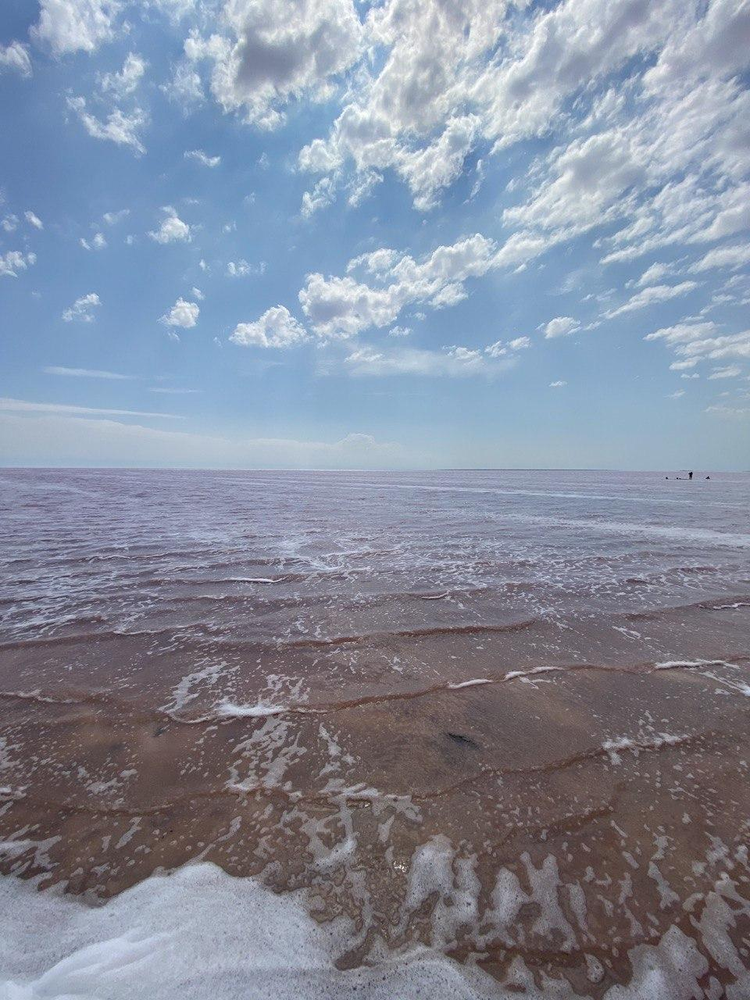

Одним из моих хобби является путешествие. Я люблю путешествовать как в Украине, так и по всему миру. Одно из интересных мест, в котором я побывала этим летом, являются Розовые Озера.

Больше о розовых озерах вы можете узнать кликнув на картинку.